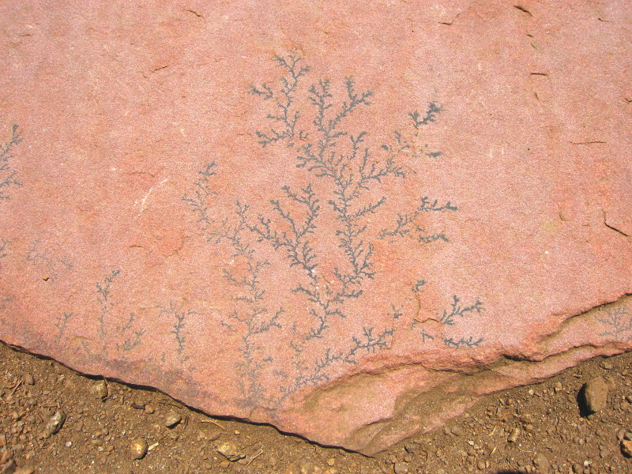

Diffusion Limited Aggregation
Each occupied cell diffuses by taking a random walk (see the Diffusion rule). However, one special state acts as a solid. Any other state coming into contact with a solid will "freeze" into a solid (change state). The net effect is that a crystalline solid will slowly grow. This process is called diffusion limited aggregation because the solid's growth (or aggregation) is limited by the areas accessible to the diffusing gas.
Real world examples of this process include frost forming on windows, lightning, and certain mineral deposits like this beautiful manganese oxide crystal that grew within a piece of Lyons Sandstone in my backyard. From personal experience, another example is a freezing LCD laptop monitor in the high Canadian arctic (umm, not recommended).
In all cases, the resulting shape is a beautiful fractal with dimension ~1.70 (use the Fractal Box-Counting Dimension Analysis).
Although this simulation uses diffusion on a Margolus lattice, the same simulation could be accomplished using a lattice-gas style simulation on a regular (non-Margolus) lattice.